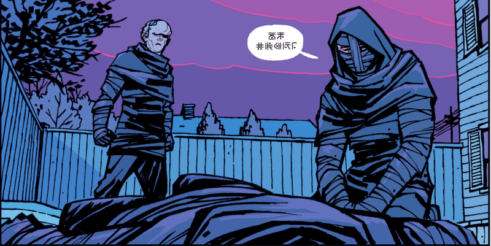
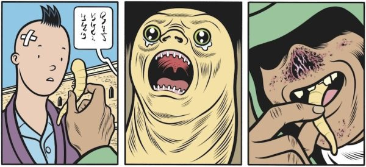
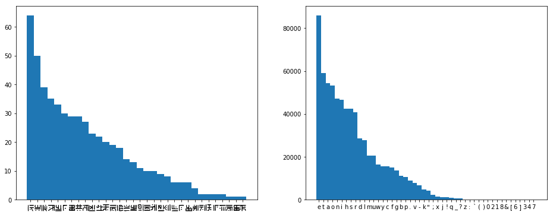
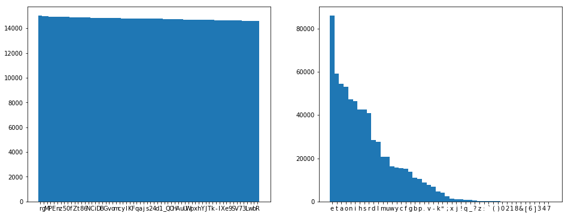
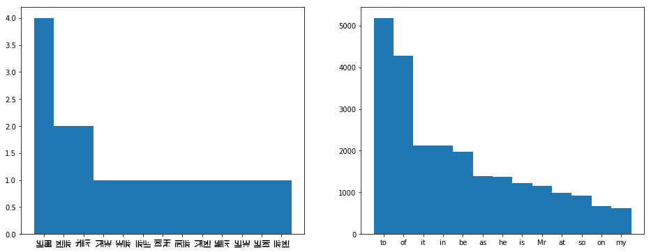
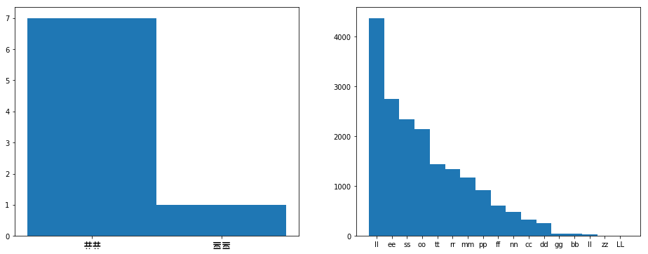
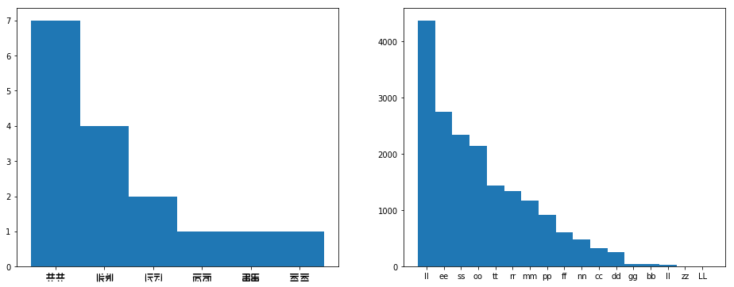

Paper Girls, Substitution Ciphers, and Frequency Analysis
December 9, 2018WARNING! IF YOU’RE READING THIS, YOU’RE DOING IT WRONG. CLICK THE LINK, READ IT ON MY BLOG. IT’LL BE WAY LESs CONFUSING. ANYWAY. THIS WEeKEND, I PICKED UP A COPY OF PAPER GIRLS, A MYSTERY/SCIENCE FICTION COMIC ABOUT FOUR GIRLS ON A PAPER ROUTE. WAIT, YOU CAN’T UNDERSTAND ME? OH, FUCK, DOESN’T LOoK LIKE IT. SORrY, LET ME ADJUST.
Ah, I’m so sorry, is this any better? Once again, so sorry, I think I’ve been reading this stuff for too long, think I got carried away… Anyway, I’ll take it from the start. So this weekend, I picked up a copy of Paper Girls, a mystery/science fiction comic about four girls on a paper route…
It starts simple. Our four heroes band together to deliver papers on Halloween morning. But it quickly escalates. Testament to this fact, thirty-five pages in we meet three time traveling teenagers, wrapped in black bandages, speaking in these things…

These glyphs are used for the rest of the book, and—best I can tell—the rest of the series without any real explanation… which leaves me with the following question:
What in fuck’s name are they saying?
Wanna guess what today’s topic is? Yep. Welcome to my class, “Help! These letters are all funky! (Part 1, Substitution Ciphers)”.
Now, I’ve done this before. Several years ago, I was given a copy of Johnny 23 by Charles Burns which is, euh, a book put together using panels from X’ed Out, with an entirely new “story” written in strange glyphs… Sound, well, semi-familiar at least?

It turns out that what Charles had done was basically a substitution cipher—you make up one crazy glyph for each letter of the alphabet, and then instead of writing letters from the alphabet, you use the alien glyphs you came up with…
Honestly, there’s some pretty good reasons to assume that Paper Girls does the same. Substitution ciphers are really easy to come up with—you basically have to come up with one weird glyph for ever letter in your alphabet. Plus, they get the job done! At least, it’s pretty clear to me that our time traveling teenagers are speaking some arcane language!
Substitution ciphers are pretty easy to solve, but compare that more complex ciphers. We could have the cipher evolve over time, say, shift those sinister glyphs by one every time we turn a page. But… do the characters know what page they’re on? And could you speak a language where the sounds you make to say, say chair, change every few minutes?
What about actual cryptographic ciphers? We might as well be putting random noise on the page! There’s no way any reader would crack anything like that, and no way any human could actually speak, say, RSA-encrypted English.
Ideally, you would construct an entirely new language. Constructed languages have a long and rich history, stretching from the 17th century search for the Perfect Language to the modern desire to make our Bad Space Russians and Magic Romans more compelling. However, constructing a languages takes a serious amount of time and effort, and heaps of linguistics knowledge, so you’ll probably only find this kind of stuff in huge and well-funded projects—or in the works of a guy who really just writes fantasy to justify his conlanging hobby.
All in all, ciphers aren’t the best way to emulate a new and unfamiliar language, but they are the cheapest… “But how do I crack this stuff?!”, you cry out in frustration. Right, good point. Let’s get back to today’s lecture!
How do you crack this stuff?
First off, I’ll be writing some Python code in this section. Really, I’m just doing that ’cuz I’m bad at counting. You can do everything I’ll be doing by hand, with just some pen and paper.
The first thing you need to do is get some data. Grab your favourite comic with a cipher in there, and start writing down words. I’ll be using the first five issues of Paper Girls for this, because that’s how far I’ve read.
data = "\n".join([
"GODdAMNIT.",
"SPLIT UP. WE'Ll MEeT AT THE SECOND FOLDING.",
"STAY AWAY FROM ME!",
"STOP!",
"PLEASE!",
"YOURE GOING TO GET YOURSELVES KILlED!",
"YOU PEOPLE ARE OUT OF YOUR",
"NO",
...
])And then?
Frequency analysis
Let’s do a wee bit of counting, shall we? First off, we’re gonna blindly assume that spaces mean spaces, apostrophe means apostrophe—I’ve only found one in the entire series so far—and comma means comma. That means we’re not really interested in any of those, so let’s replace them with the empty string. Then, we tally up the number of times each letter occurs, and list them, sorted by frequenceny in descending order.
letters = re.sub(r"[\s',]","",data)
letters_counts = collections.Counter(letters)
letters_counts = sorted(letters_counts.items(), key=lambda x: x[1], reverse=True)[('E', 64),('T', 50),('O', 39),('A', 35),('I', 33),('.', 30),('S', 29),('L', 29),('H', 27),('N', 23),('R', 22),('Y', 20),('D', 19),('U', 18),('G', 14),('W', 13),('C', 11),('M', 10),('B', 10),('P', 9),('V', 8),('F', 6),('!', 6),('K', 6),('o', 4),('e', 2),('J', 2),('?', 2),('X', 2),('d', 1),('s', 1),('Q', 1)]So if we wanna stick to our guess that this is really just English, but written with silly squiggles, then it’s looking pretty likely that ‘E’ is the letter ‘e’, since off the top of my head that’s the most commonly used letter in English. But what’s the rest? I always forget, though I know that the rest of the vowels and the ‘n’ are pretty high up there. We could Google, but, like, why would we? Let’s just grab some English text and count!
(Note: I strongly recommend not doing the next part by hand.)
Cool. Let’s pick some random English text, say Emma by Jane Austen—why not?—and do the exact same thing. We remove spaces, apostrophes, and commas, and while we’re at it, let’s convert the text to lowercase—our eldritch glyphs don’t really look like they have a case distinction.
letters_emma = " ".join(nltk.corpus.gutenberg.words('austen-emma.txt'))
letters_emma = re.sub("[\s',]","",emma).lower()
letters_counts_emma = collections.Counter(letters_emma)
letters_counts_emma =
sorted(letters_counts_emma.items(), key=lambda x: x[1], reverse=True)[('e', 86021), ('t', 59201), ('a', 54379), ('o', 53199), ('n', 47288), ... ]Let’s plot those side by side, see if anything looks off about this.

Great news! The distribution of the letters looks like language. For comparison, if we encrypt Emma and then do frequency analysis, it looks something like this:

Ok, so hypothesis:
The frequencies for Paper Girls overlap exactly with those of Emma.
Let’s test it. First, we build a translation table, and then we apply it to our data.
trans = {
l1: l2 for (l1, c1), (l2, c2) in zip(letters_counts, letters_counts_emma)}
data_transed = [
''.join(trans.get(c,c) for c in line) for line in data.splitlines()][
'yauqogdnti',
"hpsnt wpi ce'ss ge;t ot tre hefadu vasundyi",
'htom ocom vlag ge-',
'htap-',
'pseohe-',
'mawle yandy ta yet mawlhes.eh knsseu-',
'maw peapse ole awt av mawl',
'da',
...
]Ok, so, maybe we’re not so lucky? Eugh, why do these things always have to be hard.
Well, our data is pretty sparse, so it makes sense that these wouldn’t line up precisely, even if our teenagers were speaking English… And I’m not particularily keen on going in and transcribing more, so I guess we’ll just have to do more thinking.
Let’s just assume that we got one or two characters right. Those first peaks look pretty convincing, so let’s assume ‘E’ is ‘e’ and ‘T’ is ‘t’. What else can we do?
Common words
We can have a look at the single-letter words! Let’s pretend we don’t know English. What are common single-letter words, according to Emma?
single_letter_words_counts = collections.Counter(
word for word in emma.split() if len(word) == 1 and word.isalpha())
single_letter_words_counts = sorted(
single_letter_words_counts.items(), key=lambda x: x[1], reverse=True)[('I', 3178), ('a', 3004), ('s', 933), ('A', 125), ('t', 19), ('d', 12),
('E', 11), ('o', 8), ('F', 4), ('W', 4), ('V', 3), ... ]Ah, yes, the well-known word ‘W’. But at least we can be fairly sure that the only single-letter words which matter in English are ‘I’ and ‘a’, and we didn’t even have to think! Let’s see what single-letter words our data has on offer…
single_letter_words = set(word for word in data.split() if len(word) == 1)['I']Well, that’s disappointing, now we have to pick. At least we’re fairly sure now that ‘I’ will turn out to be either ‘i’ or ‘a’.
We can repeat this trick for two letter words, three letter words, four letter words, etc. However, we’ll probably need quite a lot of data for word counts to start looking like your average word counts for English—like those found in Emma and only Emma. Let’s count up the two-letter words, and plot their frequencies:

It’s tempting to assume that those plots align exactly, but we’re dealing with really sparse data at this point. Instead, let’s use the knowledge that we’ve uncovered so far to see if we can find any of those common words. The words ‘TO’, ‘IT’, and ‘AT’ all feature a ‘T’. They seem like pretty likely candidates for ‘to’, ‘it’, and ‘at’, so it seems quite likely that ‘O’ is ‘o’, and that ‘I’ is ‘i’ and ‘A’ is ‘a’, or vice versa. Note that ‘A’ is the fourth most character, like we’d expect from an ‘i’ or an ‘a’. Based on the frequencies—‘a’ is a more common character than ‘i’, but ‘I’ is a more common word than ‘a’—we can guess that ‘I’ is ‘i’ and ‘a’ is ‘a’.
We could continue with this trick for quite a while, using three-letter words, four-letter words, bi-grams, tri-grams, etc. However, we could quite quickly run into the problem that the data we have is really quite sparse, and we can only really solve that by reading more Paper Girls and adding more phrases to our database… which… well, the first part of that sounds like fun. However, there is one trick which we can still quite easily exploit…
Double letters
Let’s do some counting of repeated letters, such as the ‘tt’ in letters, and see how those patterns compare to those found in English. We do this by zipping the data with the data offset by one–e.g. from "hello" we would get [('h','e'), ('e','l'), ('l','l'), ('l','o')]—and then picking only the pairs where both letters are the same—in our example, ('l','l').
doubles = [ l1 + l2 for l1, l2 in zip(data,data[1:]) if l1 == l2 ]
doubles_counts = collections.Counter(doubles)
doubles_counts = sorted(doubles_counts.items(), key=lambda x: x[1], reverse=True)You’ve got the hang of this by now—we count doubles in Emma as well, and plot both distributions.

Whoa, so something kinda weird is going on here. First off, really? There’s only two characters that are ever repeated? Like, our sample size is small, but not that small. Also, neither of these characters are anything we have a guess for yet… so if our guesses are correct, we don’t have any occurances of ‘ee’ or ‘tt’. Look at the chart for Emma, they’re pretty common.
It may be a good idea to have a closer look at the data. If you scroll up to where we defined data, you’ll find ‘Dd’ and ‘Ee’, and actually, if we look at all the data, we’ll find ‘Oo’ and ‘Ss’ as well. These mirrored versions of the characters only seem to appear directly after a neutral versions of the same character, and they look suspiciously like repeated characters. Actually, we should’ve asked this a long time ago. How many characters do we even have?
num_characters = len(letters_counts)32WHAT?! 32 CHARACTERS?! Right, that doesn’t mash with our whole “Latin alphabet” thing. Eugh, let’s finish this “double characters” thing first, and then we’ll look into our surplus of characters.
Let’s count up the double characters and the characters followed by their mirrored image, and plot those against the double characters in Emma.
doubles_or_mirrored = [
l1 + l2 for l1, l2 in zip(data,data[1:]) if l1 == l2 or l1 == l2.mirrored() ]
doubles_or_mirrored_counts = collections.Counter(doubles_or_mirrored)
doubles_or_mirrored_counts = sorted(
doubles_or_mirrored_counts.items(), key=lambda x: x[1], reverse=True)
Ah, that makes way more sense. We can still probably assume that ‘LL’ is ‘ll’, and it probably makes sense to stick to our guns and say that ‘Oo’ is ‘oo’ and ‘Ee’ is ‘ee’.
Too many characters
Eek! So let’s get to that whole “too many characters thing”. See, if our hypothesis is true, and this is really English, then we’d kinda expect to see at most 26 characters. Realistically, we’d expect more like 20 to 23 characters. For instance, if we check the frequency analysis for letters a while back, we see that ‘v’, ‘k’, ‘x’, ‘j’, ‘q’, and ‘z’ are rarer in English than the full stop.
So what do we do with our bonus characters? Well, if we go with the idea that doubles are mirrored, then that at least takes care of four characters: ‘o’, ‘e’, ‘d’, and ‘s’. That takes us down to only 28 characters.
So… four down, at least two to go? The most common non-letter is the full stop, but it’d be a bit weird if the full stop were included in the alphabet, given that the comma and the apostrophe were just written as usual. However, if we look at the data, we find three characters—., !, and ?—which exclusively appear at the end of words, and almost exclusively at the end of the entire speech bubble. Moreover, almost every speech bubble ends with one of these characters, the only exceptions being chapter titles and two other utterances. We can assume that these are ‘.’, ‘!’, and ‘?’, in order of frequency. Honestly, it doesn’t hurt too much if we get these wrong, the only important thing is that—if these truly are punctuation—we don’t try to assign letters to them.
Write down everything we’ve got!
Right, so, we’ve made quite a few guesses by now, let’s see if that gets us anywhere. First, let’s write down everything we’ve got…
trans = {
" ": " ", "'": "'", ",": ",",
'A': 'a', 'E': 'e', 'e': 'e', 'T': 't', 'I': 'i', 'o': 'o', 'O': 'o', 'L': 'l', '.': '.', '!': '!', '?': '?'}…and then use that to try and translate our data, replacing anything for which we haven’t made a guess yet with an underscore.
data_transed = [
''.join(trans.get(c,'_') for c in line) for line in data.splitlines()]['_o__a__it.',
"__lit __. _e'll _eet at t_e _e_o__ _ol_i__.",
'_ta_ a_a_ __o_ _e!',
'_to_!',
'_lea_e!',
'_o__e _oi__ to _et _o___el_e_ _ille_!',
'_o_ _eo_le a_e o_t o_ _o__',
'_o',
...]From here, it’s a bit of a word puzzle. For instance, "_e’ll _eet at t_e" looks like it’s saying “we’ll meet at the”. Let’s add those guesses, and translate again, see if they make sense?
['_o__am_it.',
"__lit __. we'll meet at the _e_o__ _ol_i__.",
'_ta_ awa_ __om me!',
'_to_!',
'_lea_e!',
'_o__e _oi__ to _et _o___el_e_ _ille_!',
'_o_ _eo_le a_e o_t o_ _o__',
'_o',
...]Does "awa_ __om me" say “away from me”? Let’s see if that makes sense!
['_o__am_it.',
"__lit __. we'll meet at the _e_o__ fol_i__.",
'_tay away from me!',
'_to_!',
'_lea_e!',
'yo_re _oi__ to _et yo_r_el_e_ _ille_!',
'yo_ _eo_le are o_t of yo_r',
'_o',
...]Right, stay, as in “stay away from me!” If we’d kept the source text in mind, we would’ve probably seen that. Though I often find it easier to stare only at the underscored text, to not be distracted by these otherworldly glyphs.
['_o__am_it.',
"s_lit __. we'll meet at the se_o__ fol_i__.",
'stay away from me!',
'sto_!',
'_lease!',
'yo_re _oi__ to _et yo_rsel_es _ille_!',
'yo_ _eo_le are o_t of yo_r',
'_o',
...]Things are starting to get pretty clear. “Stop!”, “Please!”, “youre going to get yourselves killed!”, “you people are out of your”… We can keep doing this, and eventually we’ll manage to find guesses for most of the letters. The authors have even included an ‘x’ and a ‘q’ in such natural words such as ‘vertex’ and ‘tuplequad’. Honestly, that last one took me a while. The ‘ua’ and the fact that it was either gonna be a ‘q’ or a ‘z’ helped.
…and then you make a nice table
Woo! We’ve done it! We can read the bizzare glyphs in Paper Girls now! And the only letter we’re missing is the ‘z’. Hope I’ll find one of those in one of the later books.
| A | B | C | D | E | F | G | H | I | J |
| a | b | c | d | e | f | g | h | i | j |
| K | L | M | N | O | P | Q | R | S | T |
| k | l | m | n | o | p | q | r | s | t |
| U | V | W | X | Y | _ | . | ! | ? | |
| u | v | w | x | y | z | . | ! | ? |
Wrapping up, what have we learned? I guess the important things are that you can pretty easily crack any substitution cipher by boldly making some assumptions about what the language is, and then exploiting letter frequencies from that language… and that you can exploit way more than just plain letter freqencies—short words, n-grams, repeated characters, they’re all good candidates for frequency analysis.
Also… Paper Girls is fucking rad, go read that shit.